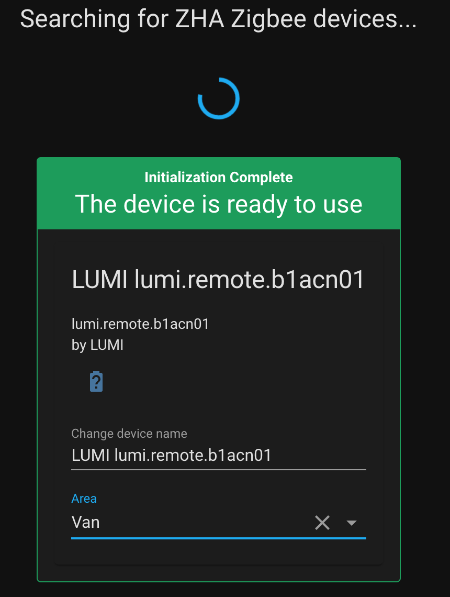
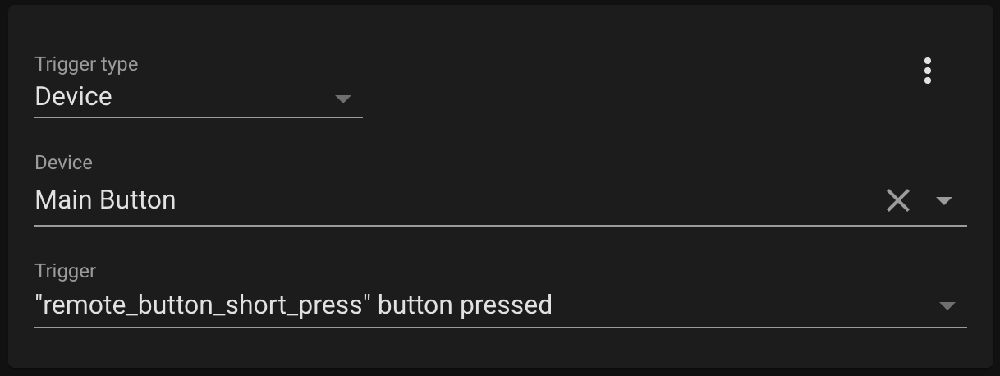
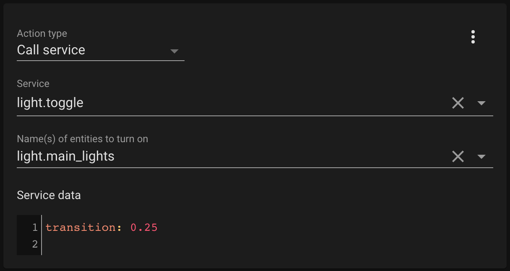

With my lights now setup through Home Assistant I could control them from my phone or computer, but it would
be nice to have some physical switches around the van as well. Wiring up light switches can be a pain and a lot of
work, so I decided to use some Zigbee wireless buttons instead.
A few things are needed to get this set up:
- Aqara Wireless Mini Switch: These buttons are wireless and battery powered, so it's easy to install them anywhere you'd like
- Zigbee USB Dongle: The Raspberry Pi doesn't have Zigbee, so a dongle is needed. There are more expensive options that have more range and can handle more devices, but this one is cheap and good enough for my use case. This one also comes with the programming adapter which is needed
- CC Debugger: This device is used to program the Zigbee dongle
The first step is to program the Zigbee dongle with the correct firmware. It is well documented how
to do this on other sites. I followed the instructions here:
Once the dongle is programmed you can insert it into the Raspberry Pi. To add it into Home Assistant you
then need to add the Zigbee Home Automation integration. Go to 'Configuraton' then 'Integrations', then click 'Add
Integration'. Search for Zigbee and add the integration. It should automatically detect the Zigbee dongle and set
itself up.
Next we need to configure the Aqara Wireless Switches. From the Integrations page, click configure on
your Zigbee integration then click 'Add Device'. Take out your Aqara switch and remove the plastic tab protecting
the battery. Press and hold the small button on top of the device, and Home Assistant should discover it as seen
below.

Sometimes this takes a few tries and it helps to hold the button closer to the Raspberry Pi when doing
this. After it is discovered you can change the name of the device to something more descriptive.
With the button now configured in Home Assistant the last step is to link it to the lights with an
automation. Create a new automation by going to 'Configuration', 'Automations', and 'Add Automation'. Add a new
trigger for the automation to start when the button is pressed:

And then add an action to toggle the light:

The 'transition' property adds a cool effect of gradually increasing/decreasing brightness over the
specified time period. I also created a second automation for controlling the bed lights from a double press of
the button.
The button should now work for controlling the lights! You can repeat the same steps to add more buttons
as well. I have one by the steering wheel, one by the sliding door, one by the bed, and one centered on a cabinet.
You can also follow the same above steps to add other Zigbee devices. I added this temperature and humidity sensor: